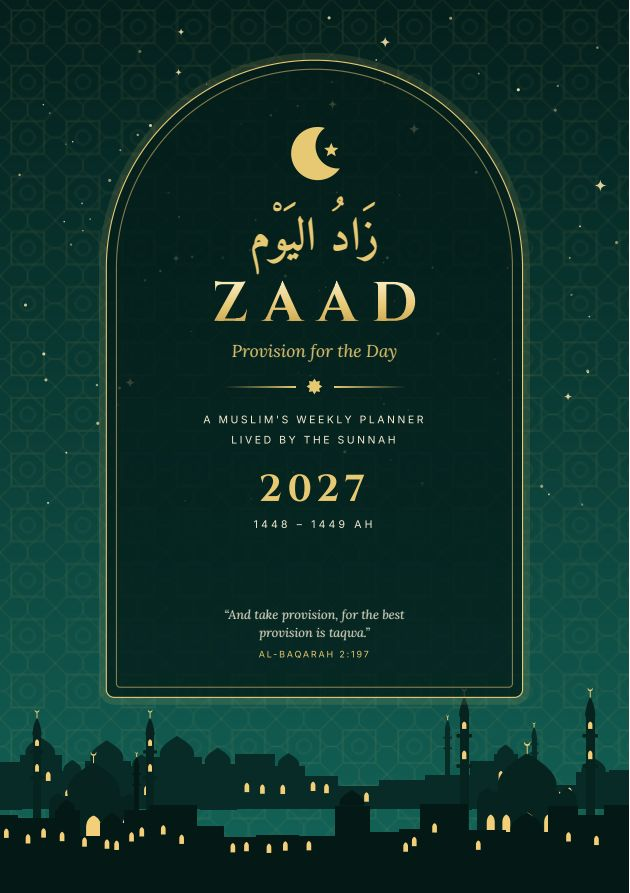
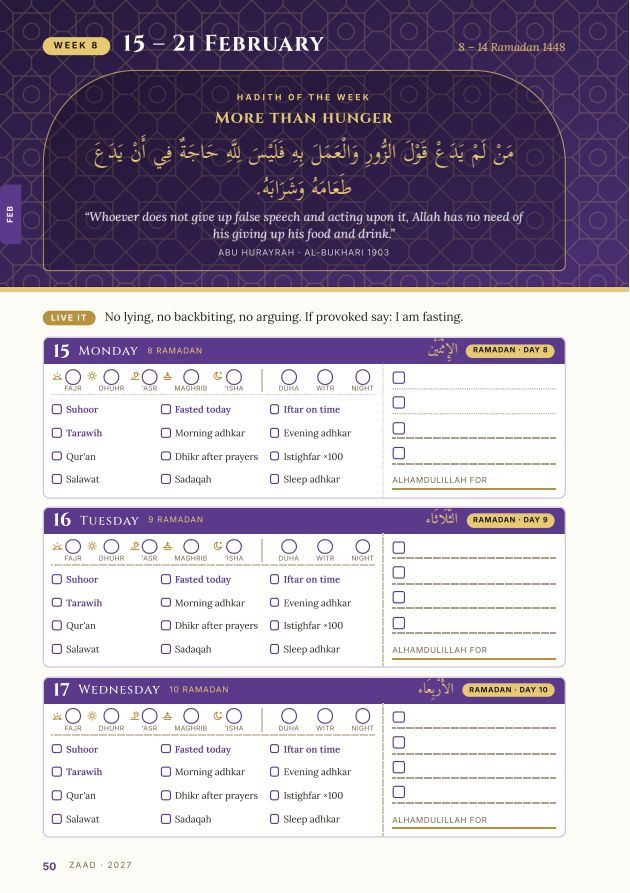
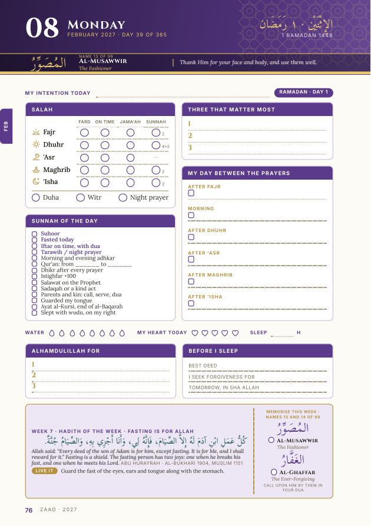
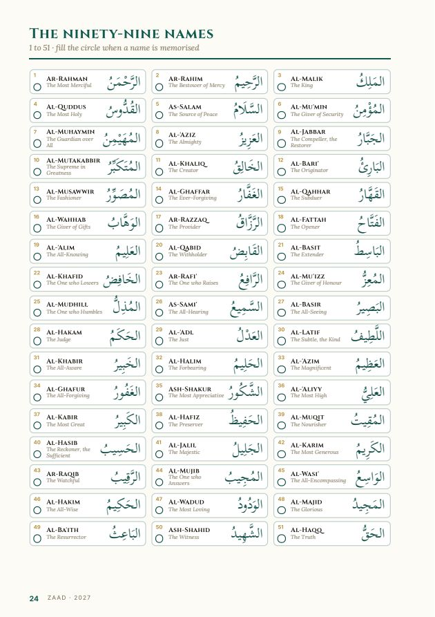
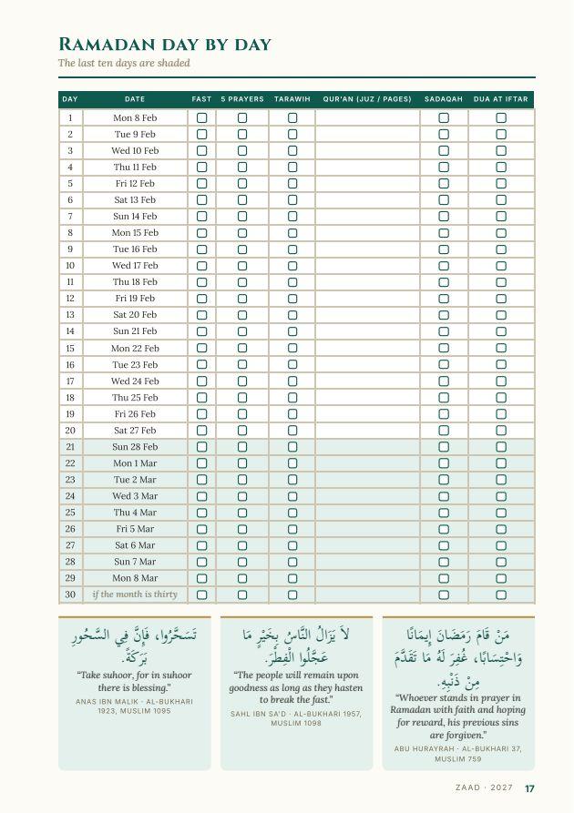

Zaad: Provision for the Day
A Muslim's planner for 2027 (1448 – 1449 AH), built around the five prayers.
- A hadith in Arabic and English every week, with its narrator
- The ninety-nine names of Allah, two to memorise each week
- Hijri dates, Ramadan and Dhul-Hijjah pages, prayer-time strips
- Qur'an, fasting, sadaqah and dua trackers, a Sunnah each week
A look inside




Two editions
Weekly: for your bag
One week on two facing pages. A5, full colour.
Daily: for your desk
A full page for every day of the year, with a name of Allah on each. A5, full colour.
Today from Zaad
Name of Allah for today · of 99
Sunnah of the week · week
Call upon Him by His names
وَلِلَّهِ الْأَسْمَاءُ الْحُسْنَىٰ فَادْعُوهُ بِهَا
“To Allah belong the most beautiful names, so call upon Him by them.” al-A'raf 7:180
This page shows what the planner would give you today. The name and the Sunnah follow the weeks of Zaad, a Muslim's planner for 2027 (1448 – 1449 AH). The names are the well-known list reported in at-Tirmidhi 3507; Allah has names beyond these. The Hijri date follows the Umm al-Qura calendar and may differ from your local moon sighting by a day.